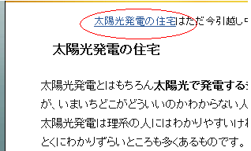
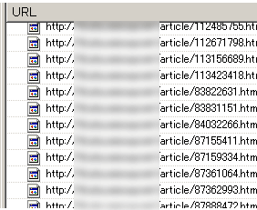

ブログ引越しのSEO対策
わたしのシーサーブログのなかで、時間をかけたもののアクセスのしょぼいブログがあるんですけど、独自ドメイン化したら少しでもアクセスアップになるかな？と思い、今日、新ドメインへブログの引越しをしてみました。
無料ブログレンタルの場合、どうも通常のサイト移転の場合のようなリダイレクトによる引越し方法が使えないようなんで、SEO的にどうなんだろうって疑問もあったりです。
ブログ引越しと 301 リダイレクト
ブログを独自ドメイン化した際、301 リダイレクトをしなさいってグーグルヘルプに書いてたんで、これでいこうかなと思ったんですが、どうも無料ブログレンタルの場合、.htaccess ファイルにアクセスできないようで困ってしまいました。
概要: URL の変更を伴うサイト移転 - Search Console ヘルプ
でも、ヤフーの「リダイレクトとは？ - インフォセンター」によると、301 リダイレクトには、メタタグに設置する html タグもあるようなんです。
この 301 リダイレクトタグをヘッド内に書き込んでおけばいいかなって思ったんですが、これも、どうも無限ループみたいな感じでうまくいかないです。
旧ブログの url に 301 リダイレクトタグを設置しても、新ブログのメタタグにも自動的に出力されるので、無限ループみたいな感じで永遠にリダイレクトしちゃうんで、たぶん、サーバー転送量とかで問題になると思うんです。
結局、普通に「ブログを引っ越しました」って書いとけば、グーグルならたぶん分かると思うんで、シンプルな感じでふつーにやるのが一番じゃないかなって気がします。
独自ドメイン化とブログの引越し
ブログを独自ドメイン化する場合は、やはり url が変わってしまうので、つまりは通常のブログ引越しと同じ意味だと思うんです。
今回、私が独自ドメイン化したのはこんな環境系のブログなんですが、最初にやったことは全ページに新 url トップページへのリンクを貼ったことです。

現在のインデックス数は約60ぐらいのブログなんですけど、新ブログが認知されはじめたら、この旧インデックスは被リンクが少なくなると思うので、インデックスは自然消滅するのではないかなと思ってます。
それまで何ヶ月かかるかわかりませんが、それまではブログ引越しましたのリンクをつけてるつもりです。
ひょっとすると、新旧のインデックスが両方ともなくなる可能性もなきにしもあらずですが、たぶん、大丈夫なんじゃないかなって気もするんです。
ブログを独自ドメイン化すると、旧ブログへのアクセスはそのままで、新ブログでのリンク関係が出力されますが、自分でサイドバーや記事中に挿入した内部リンクは修正しなくてはいけません。
以前に、ブログのリンク切れとリダイレクトのSEO対策で使用した無料ツールで見てみると分かりやすいです。

そのブログではだいたい、30ぐらいの内部リンクを修正すればいいみたいですが、正直めんどくさいです。
この内部リンクはほったらかしでも、旧リンクは存在するので、リンク切れにはならないと思いますが、被リンクがある状態だとインデックスの移行やページランクの受け渡しあれこれがあると思うんで、いちおう SEO した方がぶなんです。
このリンクの修正をしているときに思ったのですが、シーサーブログを独自ドメイン化すると反応が若干はやい気もします。
詳しくはわかりませんが、新旧のブログ url で ip アドレスも変わっているようなんで、ひょっとしたら、サーバーもいい感じになるのかなという気もします。
リダイレクト関係を間違って使っちゃうと、インデックス消滅の原因になりそうですが、かといってふつーにブログの引越しをするとページランクの受け渡しあれこれがどうなんだろうという気もするんで、しばらくこのまま様子をみてみようと思います。
独自ドメインを新規に取得した場合のエイジングフィルタな疑問もあるんで、半年ぐらいほったらかしにしてみようと思います。
ブログ引越しの場合は url が重複してしまうので、個別記事に Permalink を設定してない場合は、やはりつけておいた方がぶなんかなと思います。
ちなみに、ブログ引越しの際はウェブマスターツールやブログランキング、アフィリエイト登録などもはやめに修正した方がいいと思います。
- シーサーブログを独自ドメイン化
独自ドメインを取得したあとはレンタルサーバーを借りて、そのあとＭＴブログというパターンが多いのではないかなと思います。けれども、シーサーブログで独自ドメイン化すると、サーバー代がかからないのでおすすめ... - htaccess ファイルって何だろう？
ホームページ作成の際、.htaccess と robots.txt のファイル設定は基本的な設定事項としてよく出てきますが、両方ともなきゃないでもいいっぽい気もします。 .htaccess のファイ... - ブログ引越しの重複インデックスとSEO
以前の記事で、ブログを独自ドメイン化して、新規 url に引越ししたシーサーブログのSEO効果について書いていたのですが、その後、インデックス数、複合キーワードでの検索ヒット数、総アクセス数の方がのき... - 独自ドメイン化ブログのインデックス推移
以前に、独自ドメインを取得してシーサーブログを独自ドメイン化してみたのですが、新ドメインへのインデックス移行もスムーズに完了し、ブログの引越しが無事終了したようなんです。そのブログではページランクもみ... - ドブログや米ヤフージオシティーズが閉鎖
ＮＴＴのブログサービス - Doblog が閉鎖になってしまったようですが、アメリカでも、あのヤフージオシティーズが本年度をもって終了となってしまうもようです。私も以前に、某ブログサービスで閉鎖のうき... - 独自ドメインブログ化から１ヶ月目のインデックス状況
このブログは独自ドメイン化してから約１ヶ月の月日が経過しようとしているのですが、新ドメインのインデックス数ものきなみ上昇中なようすです。もうすでに、旧urlでのウェブマスターツールは削除しちゃってます... - Seesaa引越し後のブログの作り方
最近、Seesaa ブログのタグページ仕様が多少変更になってしまったようなんです。「タグ - アーティクル」っていう階層の上にタグ一覧ページの/tag/っていうのがあったんですが、どうも最近なくなって... - ブログの移転でページランクも移転中、、
今年の４月中旬に新規にドメインを取得して、このブログを独自ドメイン化してみたのですが、ひと月ちょっとの間でページランクがみっつほどついたようなんです。ブログを独自ドメイン化してページランクも移行したら...